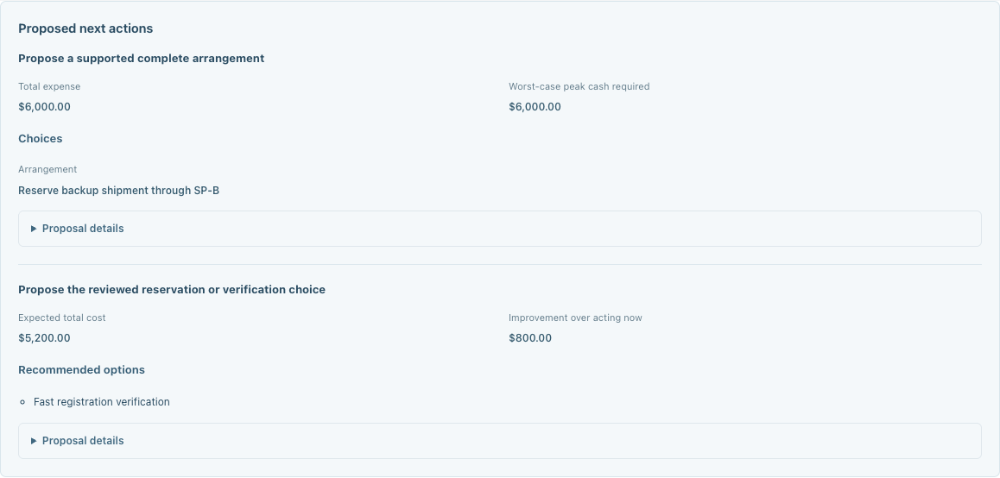
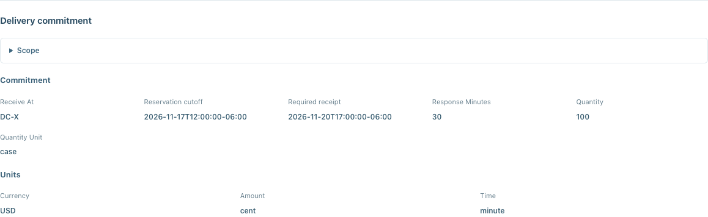
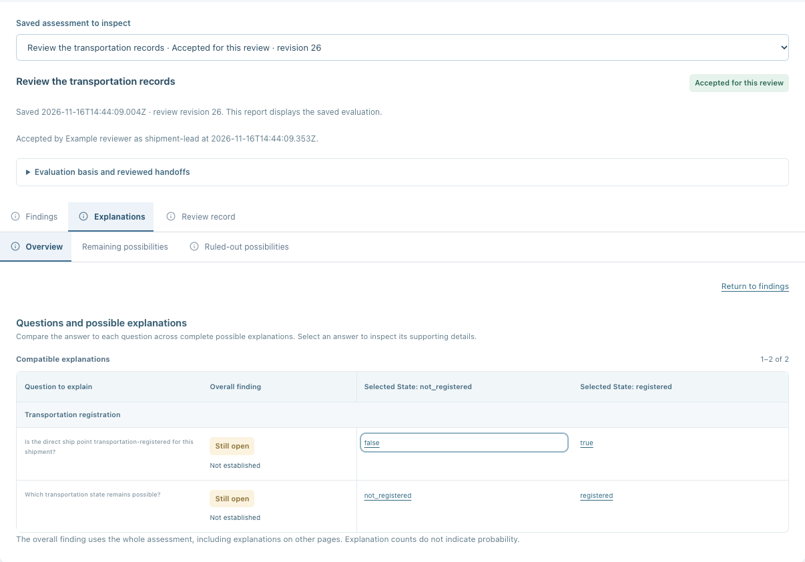
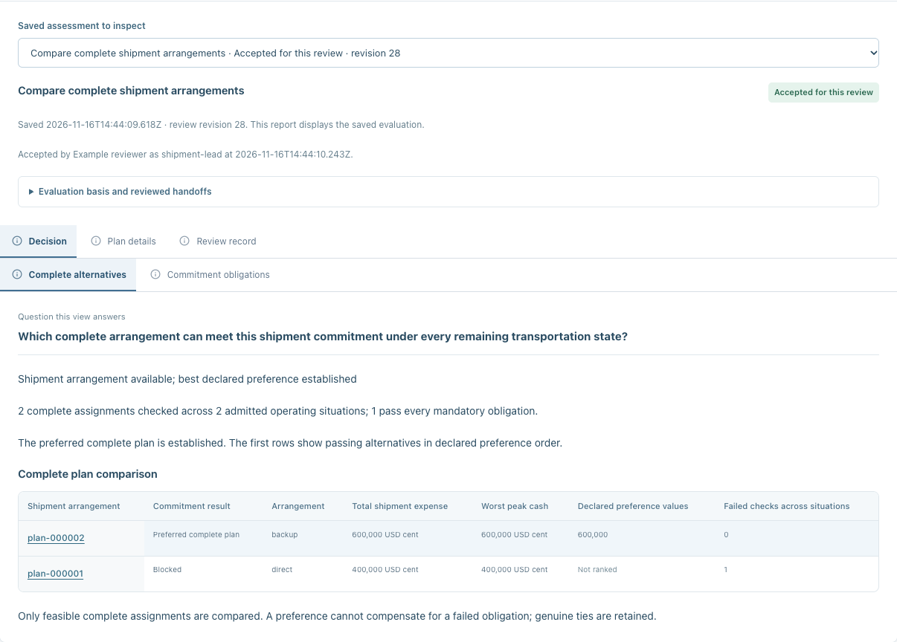
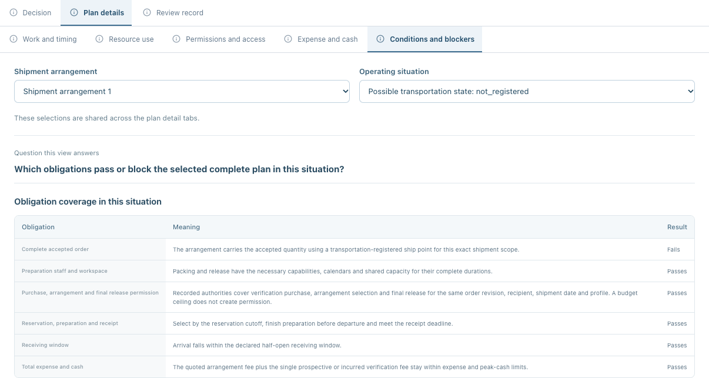
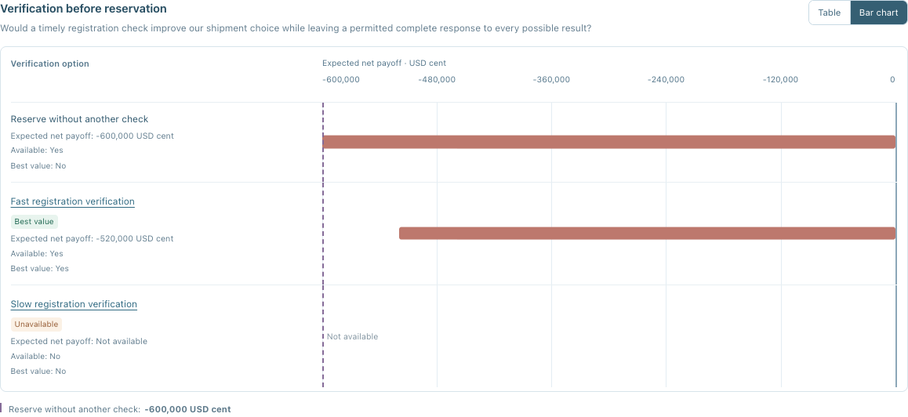
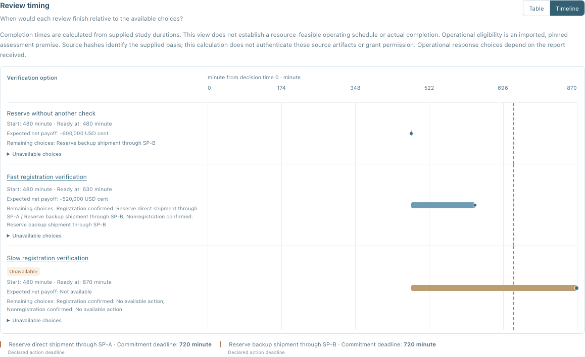

Compare complete shipment plans
Consider the route, dispatch date, cost, readiness checks, and spending authority together.

Shipment readiness
For supplier and supply chain teams.
Compare complete plans against the recorded timing, costs, registration, and authority requirements. See which plans are supported—and whether a timely check could change the choice.
Start with a source-informed fictional worked example.

The shipment decision
You have an order to fulfill, two shipment plans, and a reservation deadline.
A shipment plan describes the intended route, dates, and cost. An arrangement connects the work, people, resources, permissions, and dependencies needed to carry it out. As work progresses and conditions change, that arrangement can change—and the plan may need another review.
Does the record establish the registration this plan requires? Does the recorded authority cover this quote? Could verification arrive while there is still time to act?
Bring those questions into one review so you can assess each plan against the requirements you’ve recorded.
Read The Arrangement Problem in Human DecisionsA connected review
Consider the route, dispatch date, cost, readiness checks, and spending authority together.
See which plans are blocked by a failed check, an unresolved approval, or missing information.
Explore how a revised quote, completed check, or new approval changes the available options.
From situation to next step
Examine the deadline, shipment options, and supporting information.
See their costs, requirements, and unresolved questions.
Determine what needs to be checked, changed, or approved.
Before you commit
Explore the shipment example and see what has to be true before you commit.
Try it yourself
Use the published Review a first shipment workflow in Decision Lab.
Open Decision LabAlready installed the collection? Go straight to Guided reviews.
To inspect the results immediately, download the reviewed example, then open Published apps → Import app, workflow or case. This opens the fictional case with the calculated reports and demo reviews shown below.
Inside the example
A fictional order. Two shipment plans. One unresolved registration check. Follow the working app from the recorded situation to a reviewed proposal.
This example assesses recorded arrangement details, focusing on transportation registration, verification timing, and authority. When those details change, update the answers and reassess the affected findings. The screenshots show the app’s actual calculated results.
The workflow stitches together reusable solutions: interpret evidence, check a complete arrangement, and compare verification with committing now. Your case supplies the shipment facts those connected apps assess. Read Pattern Languages for Human Decisions for how these approaches can be reused.
Requirements, context, and role walkthroughs Open the exampleWorking through the case yourself? With Try worked example, enter a reviewer name and review the supplied answers in Commitment, Arrangements, and Prerequisites & records. Select each answer’s assigned role—shipment lead or finance reviewer—and choose Accept answer. Then use Planning results to evaluate and inspect each assessment before accepting its result for this review. The downloadable reviewed example already contains these results.
For the screenshots, “Example reviewer” recorded these demo reviews. Selecting a role records responsibility within the case.
Review the situation
In Commitment, review order ORD-104: 100 cases for DC-X. The shipment must be reserved by noon on November 17, with receipt by 5 p.m. on November 20. The case allows 30 minutes to respond to a verification result.
In Arrangements, review the two shipment plans and their recorded requirements: direct shipment through SP-A for $4,000, or backup through SP-B for $6,000. Both quote arrival at noon on November 20. Prerequisites & records holds the operating resources, records, funding, and scoped authority used to check those plans.

Review the evidence
In Planning results, evaluate Review the transportation records. Inspect its Explanations → Overview view before choosing Accept result for this review.
The supplied portal capture lists SP-A, but does not state whether that ship point is transportation-registered for this exact shipment. Both registered and not_registered remain possible. Keep both in the planning review; a listing alone does not settle the operating requirement.

Compare complete plans
Evaluate Compare complete shipment arrangements, then inspect Decision → Complete alternatives. The app evaluates the recorded arrangement supporting each plan in both remaining transportation states, including preparation, timing, resources, recorded permissions, expense, and cash.
The $6,000 backup passes every mandatory obligation in both states. The $4,000 direct plan is blocked in the not-registered state, so its lower price does not make it an available choice on the current evidence. Accept the planning result after reviewing that comparison.

Find what needs attention
In the same assessment, open Plan details → Conditions and blockers. Select Shipment arrangement 1 and the not_registered operating situation.
Complete accepted order fails because the direct ship point must be transportation-registered for the exact shipment scope. The preparation, permission, timing, receiving-window, expense, and cash obligations pass in this situation. That tells the team which question needs resolving before the cheaper shipment plan could be supported.

Understand what changes the decision
Evaluate and review Check complete responses after fast verification and Check complete responses after slow verification. These assessments test the complete shipment choices still available after each possible report. Then select finance reviewer to evaluate and review Compare verification with reserving now.
Under the example’s explicitly hypothetical 50/50 probability assessment and stipulated perfectly accurate verification, the $200 fast verification supports an expected total cost of $5,200, including its fee. That is $800 below reserving the backup immediately. If registration is confirmed, the response can select direct shipment; if nonregistration is confirmed, it selects backup.
Open Verification before reservation and choose Bar chart to inspect the comparison. The recommendation depends on the supplied probabilities, costs, and feasible responses.

Check the response window
In Verification before reservation, switch Review timing to Timeline. The fast report is available at 10 a.m.; with the 30-minute response allowance, the team can choose a shipment plan at 10:30 a.m., before the noon reservation cutoff.
The $50 slow report arrives at 2 p.m. Its response would be ready at 2:30 p.m., after reservation closes. It cannot support a timely choice, even though its fee is lower. Compare when a result can change the action, as well as what the result might say.

Make the proposal reviewable
Open Next action after accepting the current assessment results. The decision brief brings together the $6,000 supported shipment plan, the $5,200 expected-cost verification choice, the $800 expected improvement, and links to the supporting assessments.
Read Authority and next operating actions further down the brief. The case records a $250 verification purchase limit and separate release authority. The reviewed proposal still needs the actual purchase, booking, and release actions; the calculation does not perform them.
Use Export workflow run to keep a portable copy of your review, or Download decision brief to share its recorded basis. If a quote, record, or approval changes, accept the updated answer and reassess the affected findings before relying on the proposal.
Download the decision brief